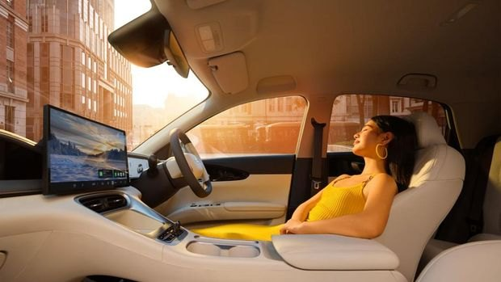

Kabin dan Bagasi Geely EX2: Seberapa Lega untuk Keluarga?

Ukuran luar yang ringkas sering membuat orang bertanya, apakah kabinnya cukup lega? Mari kita lihat data resmi Geely EX2 lalu bahas cocok tidaknya untuk keluarga kecil.
Angka ruang yang perlu diketahui
- Panjang 4.135 mm, lebar 1.805 mm, tinggi 1.580 mm.
- Jarak sumbu roda 2.650 mm. Angka ini cukup panjang untuk mobil sekompak ini, dan biasanya membantu ruang kaki penumpang.
- Kapasitas lima penumpang.
- Bagasi belakang 375 liter, bisa sampai 1.320 liter dengan kursi belakang dilipat.
- Bagasi depan 70 liter.
Karena penggerak EX2 berada di belakang dan motornya ringkas, ada ruang di bagian depan yang dimanfaatkan sebagai bagasi tambahan.
Bagasi depan 70 liter, apa gunanya
Ruang ini cocok untuk kabel pengisi daya, payung, tas belanja, atau barang yang tidak ingin bercampur dengan isi bagasi belakang. Gambar di brosur resmi memperlihatkan bagasi ini berisi satu keranjang buah. Bagasi belakang tetap bisa dipakai untuk koper kabin dan belanja mingguan.
Kenyamanan jok dan kabin
- Jok berbahan leatherette perforasi yang membantu sirkulasi udara.
- Jok pengemudi 6 arah. Manual di Pro, elektrik di Max. Jok penumpang depan 4 arah manual.
- Ventilasi AC khusus untuk penumpang belakang.
- Warna interior Dark Grey, dengan opsi Ivory White di Max.
- Lampu ambien 256 warna pada varian Max menambah suasana malam hari.
Simulasi pemakaian keluarga kecil
| Kebutuhan | Cocok? |
|---|---|
| Berdua atau bertiga sehari-hari | Sangat cocok |
| Keluarga dengan satu atau dua anak kecil | Cocok, dengan kursi anak di belakang |
| Lima orang dewasa dalam perjalanan jauh | Bisa, tetapi terasa pas, bukan lega |
| Barang bawaan besar, stroller, dan koper | Perlu diatur, atau pertimbangkan EX2 vs EX5 |
Ini panduan umum. Cara terbaik menilai kelegaan adalah duduk langsung di setiap kursi saat kunjungan ke showroom.
Tips menguji kabin saat test drive
- Duduk di kursi pengemudi lalu atur posisi, lalu duduk di belakangnya dengan posisi tadi untuk menilai ruang lutut.
- Bawa kursi anak atau stroller untuk dicoba masuk bagasi.
- Coba lipat kursi belakang dan lihat rata atau tidaknya lantai bagasi.
- Lihat jarak pandang depan dan samping, terutama untuk parkir.
Aksesori yang berguna
Karpet mobil, pelindung bagasi, dan kaca film membantu menjaga kabin tetap bersih dan nyaman. Untuk karpet, baca karpet mobil custom dan universal. Untuk perbandingan dengan SUV yang lebih besar, lihat EX2 vs EX5.
Spesifikasi lengkap ada di spesifikasi lengkap Geely EX2.
Tips mengatur bagasi
Letakkan barang berat di bagian bawah dan dekat sandaran kursi belakang agar stabil. Gunakan bagasi depan untuk barang yang jarang diambil, seperti kabel pengisi dan peralatan darurat. Dengan pembagian ini bagasi belakang tetap lega untuk belanja atau koper, dan kamu tidak perlu mengeluarkan banyak barang setiap kali butuh sesuatu.
Ringkasan
EX2 menawarkan kabin untuk lima penumpang dengan bagasi total yang fleksibel berkat bagasi depan 70 liter dan kursi belakang yang bisa dilipat. Kelegaan terasa terbaik untuk berdua sampai berempat. Jika kamu sering membawa banyak barang atau lima orang dewasa, bandingkan dengan SUV yang lebih besar.
Hubungi kami
Ingin membandingkan langsung ukuran kabin? Buat janji test drive lewat WhatsApp dan bawa barang yang biasa kamu bawa.
Informasi dan konsultasi
Data Geely EX2 dalam artikel ini mengacu pada brosur resmi Geely Indonesia dan dapat berubah tanpa pemberitahuan. Masih ada pertanyaan soal Geely EX2, mobil listrik, atau simulasi pembelian? Kirim pesan WhatsApp ke Wins, konsultan penjualan Geely di dealer PT Dwi Putra Motor, area BSD City dan Tanah Abang, Jakarta.
Tanya jawab
Berapa kapasitas bagasi Geely EX2?
Bagasi belakang 375 liter, sampai 1.320 liter jika kursi dilipat, ditambah bagasi depan 70 liter.
Apakah Geely EX2 cukup untuk keluarga?
Cukup untuk keluarga kecil. Untuk lima orang dewasa atau barang bawaan besar, ruangnya terasa pas sehingga perlu dicoba langsung.
Apakah jok EX2 bisa diatur elektrik?
Jok pengemudi 6 arah elektrik tersedia di varian Max. Varian Pro memakai pengaturan manual.